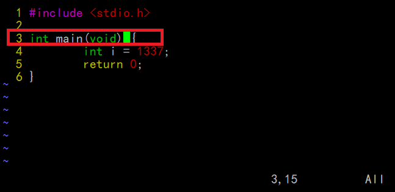
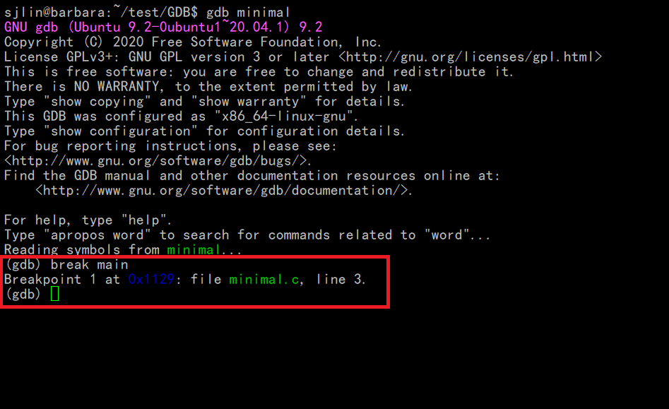
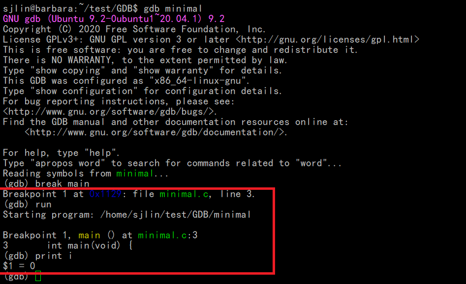
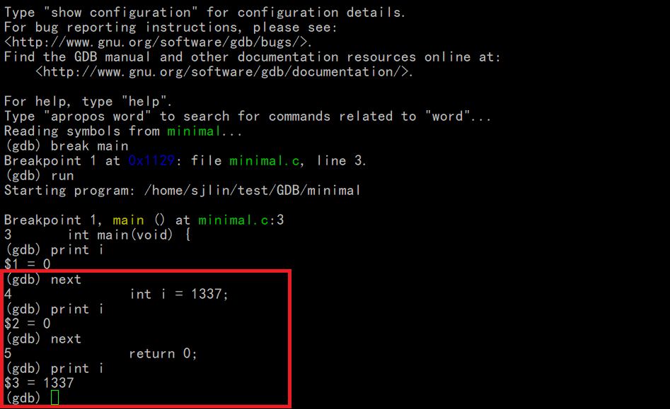
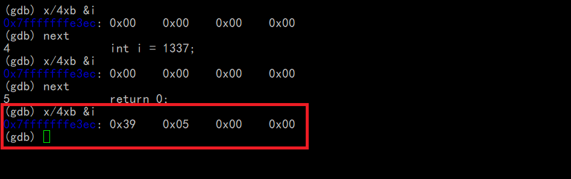
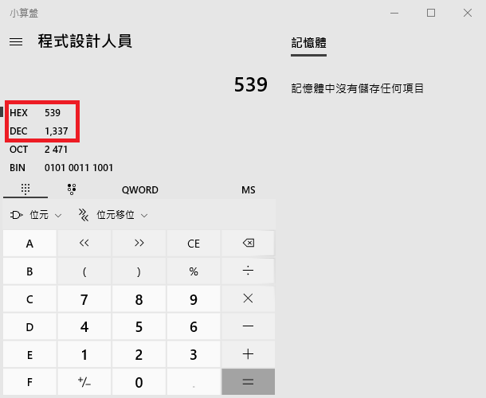

測試作業系統: ubuntu server 20.04.4
clear screen
指令: shell clear
break point 測試
- 寫一個C的小程序, minimal.c
- 用gcc編譯minimal.c成可執行檔minimal
指令: gcc -g minimal.c -o minimal
這裡多加-g參數在產生minimal時，會生成一些debug的訊息。
- 然後利用gdb來跑剛剛生成的minimal的執行檔
指令: gdb minimal
-
這裡下中斷點在main的地方。

指令: break main

- 接著開始跑程式
指令: run
- 試著把變數i的值印出來。

還是可以把i印出來，但是值是不對的。
- 可以用next一行一行跑

x命令檢查內存
指令: help x
可以看x的說明
這裡的x是指可以從某個特定的內存位址開始印出來。
假設我們用上面i的位置開始看4個十六進位的byte, 看4個byte的原因是i是整數類型是由4個byte組成, 參數寫法:4xb
指令: x/4xb &i
(記得要執行到i, 這裡i的內容為0, i有可能為亂碼, 畢竟清資料需要花時間，沒用到的地方也不會特別去清。)

這裡印出來的值是從低的位址開始印出來，所以i的十六進位值寫成習慣的寫法為
00000539
十進位: 1337

檢查類型的指令 ptype
可以用來看變數, 函數的類型
ex.
指令: ptype i
type = int
指令: ptype &i
type = int *
指令: ptype main
type = int (void)